Game Dev
World of Warcraft
Guild
After 12 years, the very first FSY meetup happened this weekend in Denmark 🦈🦈
— FatSharkYes (@Fatsharkyes) July 6, 2024
Insane massive shout out to @LoozyWoW for hosting 💙 pic.twitter.com/33JYw3ucRy
I have been playing World of Warcraft competitively since 2022. I was a part of the guild "MNM" until early 2023 and afterwards joined "FatSharkYes". With my current guild i placed 6th, 6th and 8th in the last three Races to World First, where guilds compete to defeat the final boss of a newly released raid as fast as possible.
Playing in such a competitive environment its an absolute must to be able to take criticism and give helpful feedback, work in high pressure situations, communicate well, work together as a team and problem solve.
Public Test Realm
Testing upcomming Boss Encounters while they are in development on the Public Test Realm (PTR) is a part of preparing for the Race to World First. On the PTR the developers form Blizzard are able to spectate us and gather data on their encounters. After an hour long testing period per boss guilds can give feedback and report bugs. I have been testing upcoming raids on the PTR since 2020 and have reported countless bugs over the years.WeakAuras

Weakauras is an AddOn for World of Warcraft which acts as a framework to display customizable graphics on the player's screen. The AddOn provides users with a user interface to create icons, progress bars, texts and textures that trigger based on the in-game event system. Furthermore you can run custom LUA scripts and use the game's API.
I have been using WeakAuras since 2017 and always make about 100-200 auras per raid tier, which happen roughly every six months, to help my guild progress easier. Only the top guilds in the world need to have a person on their roster that is an expert at making WeakAuras, because the best guilds share their private WeakAuras for the public to use after 1-2 weeks after completing the raid. Usually this is a paid position and is done entirely by someone who is not also a player. Over time boss encounters have become more and more challenging and are developed with the use of WeakAuras in mind.
Example
The following is an example from the last Race To World First. The boss puts an insect swarm on five random players. This swarm jumps to the closest target when it's debuff is dispelled off an affected player by a healer. There are four healers and each have an 8 second cooldown on their dispel ability. Once all the swarms have been given to the boss it is disoriented, stopping the boss from killing all players. Handling this mechanic without a WeakAura makes the boss fight significantly more difficult.
Visuals
A list shows everyone that is affected by the swarm sorted by color and order in which they will be dispelled. This list is used by the raid leader to communicate who is going to be dispelled and do a countdown for the player to have time to move close to the boss so the swarm is transfered to the boss.
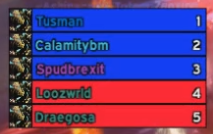The order in which players will be dispelled is added to everyones raid frame and the person that is up next is highlighted through a glowing border around the units frame.
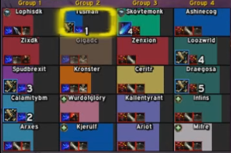Healers that are assigned to dispel get a green glow on their raid frame instead to show that its their turn to dispel.
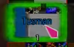Players get a traffic light color coded circle on their screen that tells them when to move.
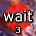 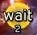 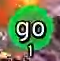Init Code
This code is ran on initialization to make sure the aura is reset when the boss encounter starts.
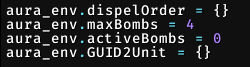This text is used for parsing the order in which healers are assigned to dispel.
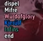This function parses the beforementioned text.
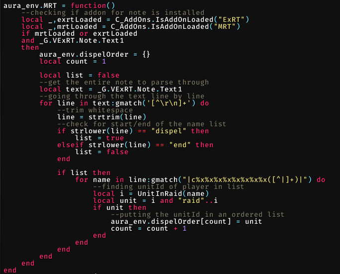This is a priority list that gives every class specialization in the game a number used for sorting.
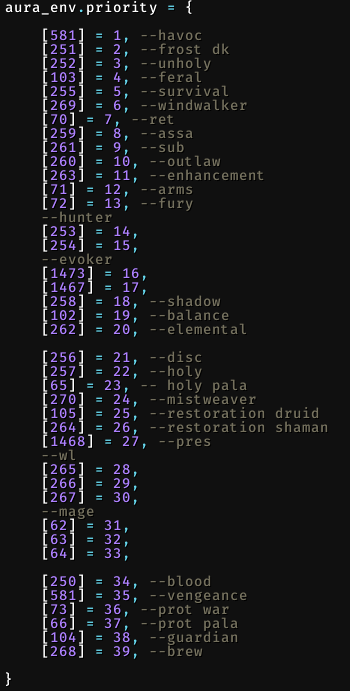This sorting function takes two unit's GUIDs and sorts them ascendingly based on color and specialization priority.
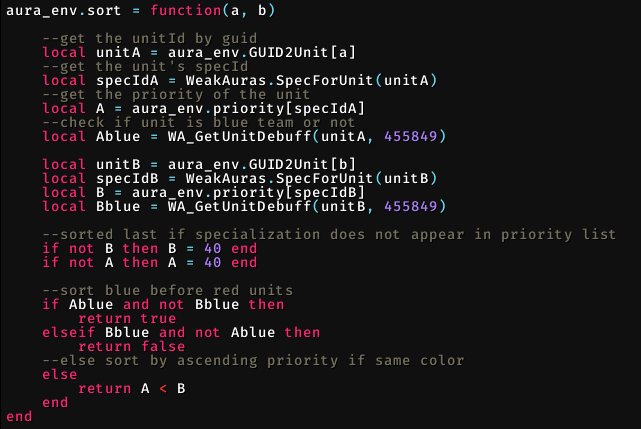Custom lua function to remove an element from a table by the units GUID
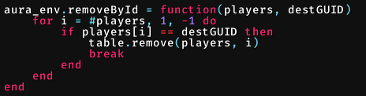Code
function(allstates, event, _, subEvent, _, sourceGUID, _, _, _, destGUID, _, _, _, spellId, ...)
-- the OPTIONS event is used to display a fake list to show what the WeakAura looks like and so that the user can position the list on their screen before the boss encounter
if event == "OPTIONS" then
-- creating 5 fake states that are only shown while the AddOns options are open
for i=1, 5 do
allstates[i] = {
show = true,
changed = true,
progressType = "static",
value = 1,
total = 1,
autoHide = true,
unit = "player",
pos = i,
}
end
-- true is returned whenever the display of the aura is updated
return true
elseif event == "ENCOUNTER_START" then
aura_env.MRT() --populate aura_env.dispelOrder from the note
--copy dispel order table to make changes to it later without changing original order
aura_env.dispelOrderCopy = {}
for k,v in pairs(aura_env.dispelOrder) do
aura_env.dispelOrderCopy[k] = v
end
aura_env.maxBombs = 5 --maximum number of dispels per cast
aura_env.activeBombs = 0 --number of active bombs
aura_env.GUID2Unit = {} --table connecting guid to unit in raid
aura_env.players = {} --table of players that are currently affected by the swarm debuff
--populating GUID2Unit table
for unit in WA_IterateGroupMembers() do
aura_env.GUID2Unit[UnitGUID(unit)] = unit
end
--parsing the combat log
elseif event == "COMBAT_LOG_EVENT_UNFILTERED" then
if subEvent == "SPELL_AURA_APPLIED" and spellId == 438708 then --when swarm debuff is applied
if destGUID and aura_env.GUID2Unit[destGUID] then
if not aura_env.players[destGUID] then
aura_env.activeBombs = aura_env.activeBombs + 1
table.insert(aura_env.players, destGUID)
if aura_env.activeBombs == 5 then --trigger custom event to sort when all debuffs have been applied
WeakAuras.ScanEvents("FSY_TINDRAL_PRIORITY")
else
--trigger sorting anyway in case there are less than 5 people alive still, can only be called every 0.5s (throttled)
if not aura_env.last or aura_env.last < GetTime() - 0.5 then
aura_env.last = GetTime()
C_Timer.After(0.5, function()
WeakAuras.ScanEvents("FSY_TINDRAL_PRIORITY")
end)
end
end
end
end
--handling removal of a swarm debuff
elseif subEvent == "SPELL_AURA_REMOVED" and spellId == 438708 then
if allstates[destGUID] then
aura_env.activeBombs = aura_env.activeBombs - 1
--state is removed, list entry is hidden and list is re-sorted
aura_env.removeById(aura_env.players, destGUID)
local s = allstates[destGUID]
if s then
s.show = false
s.changed = true
--update text that shows position on raid frame
WeakAuras.ScanEvents("FSY_TINDRAL_ORDER_DISPLAY", s.unit, s.pos, false)
end
--sorting
WeakAuras.ScanEvents("FSY_TINDRAL_PRIORITY")
return true
end
--boss's swarm cast resets the dispel order to its original state
elseif subEvent == "SPELL_CAST_START" and spellId == 438677 then
--copy dispel order table
aura_env.dispelOrderCopy = {}
for k,v in ipairs(aura_env.dispelOrder) do
aura_env.dispelOrderCopy[k] = v
end
--handling dispel events
elseif subEvent == "SPELL_DISPEL" then
local _, _, extraId, _, _, _ = ...
if extraId == 438708 then
--put dispeller last in the list
for k, v in ipairs(aura_env.dispelOrderCopy) do
if UnitGUID(v) == sourceGUID then
table.remove(aura_env.dispelOrderCopy, k)
table.insert(aura_env.dispelOrderCopy, v)
break
end
end
end
end
--sorting
elseif event == "FSY_TINDRAL_PRIORITY" then
table.sort(aura_env.players, aura_env.sort)
if #aura_env.dispelOrderCopy ~= 0 then
--iterating over sorted table to create states (list)
for i, destGUID in pairs(aura_env.players) do
if destGUID then
--assigning who dispels who
local dispeller = ""
if i > #aura_env.dispelOrderCopy then
dispeller = aura_env.dispelOrderCopy[i-#aura_env.dispelOrderCopy]
else
dispeller = aura_env.dispelOrderCopy[i]
end
--checking if unit is from team blue or red
local blueDebuff = false
if WA_GetUnitDebuff(aura_env.GUID2Unit[destGUID], 455849) then
blueDebuff = true
end
--updating state with dispeller and color
allstates[destGUID] = {
show = true,
changed = true,
progressType = "static",
value = 1,
total = 1,
blue = blueDebuff,
autoHide = true,
unit = aura_env.GUID2Unit[destGUID],
imAssigned = UnitIsUnit("player", dispeller), --true if im the unit that is supposed to dispel
--order = i, --static order
upNext = i == 1, --first person with bomb is first to dispel
pos = i, --dynamic order
}
local s = allstates[destGUID]
WeakAuras.ScanEvents("FSY_TINDRAL_ORDER_DISPLAY", s.unit, s.pos, true) --updating raid frame text order
if UnitIsUnit("player", s.unit) then --if current debuffed unit is me then update my display aura with position, and if im up next or second in line etc
WeakAuras.ScanEvents("FSY_TINDRAL", s.pos, s.pos == 1, s.pos == 2)
end
end
end
end
return true
end
end